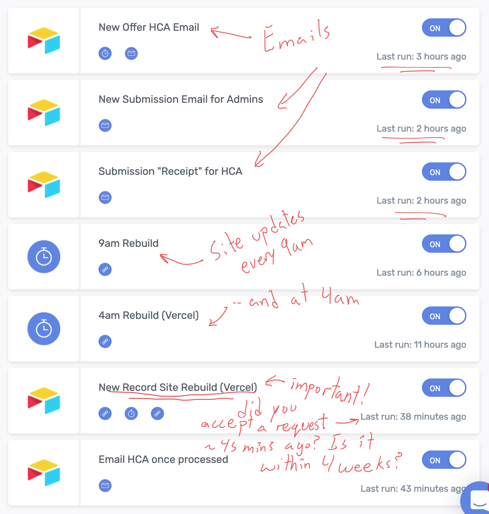

Connection between the components
Sometimes there can be a failure between the components. For example, the Automation component may have been run too many times (although that is unlikely) or perhaps the payment method was declined and the automation no longer works.
The first place to look for when an issue is present, is the database. See the first page in the Troubleshooting section.
If the website is still updating but is showing incorrect data, this is almost guaranteed to be an issue within the database, and is completely fixable without having to higher an expert.
If the website no longer updates, this may be an indication that another component has failed. The first place to look is the Automation component. Check and see when the last time each automation ran, and see if any of them seem strange.

If the automation system seems to be running fine (eg. the site rebuilds ran recently), but the site does not appear updated, then you may need an expert to look at the problem.